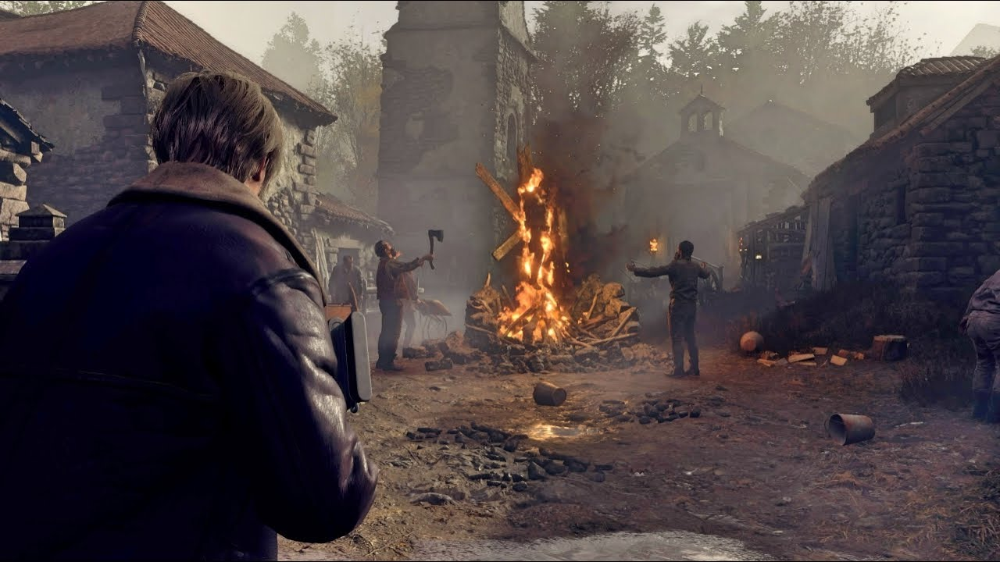

Seis anos após o desastre biológico de Raccoon City, Leon S. Kennedy
trabalha como agente do governo.
Sua missão é encontrar
Ashley Graham, que foi sequestrada.
Leon chega a uma região rural isolada da Europa e encontra moradores
hostis.
A investigação revela a presença de uma organização chamada
Los Illuminados e de um parasita conhecido como Las Plagas.
